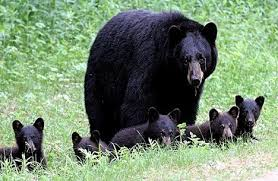
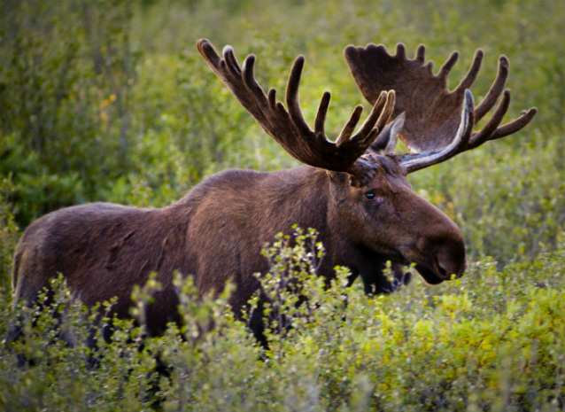
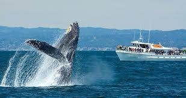

Maine is very well known for their wildlife and that's what attracts tourists. In Maine you can spot alot of rare animals such as moose, deer, bears, birds and whales. Most of the time spotting these animals is pure luck , however since there has been an increase in deforestation, sightings are becoming more common.
  